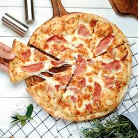
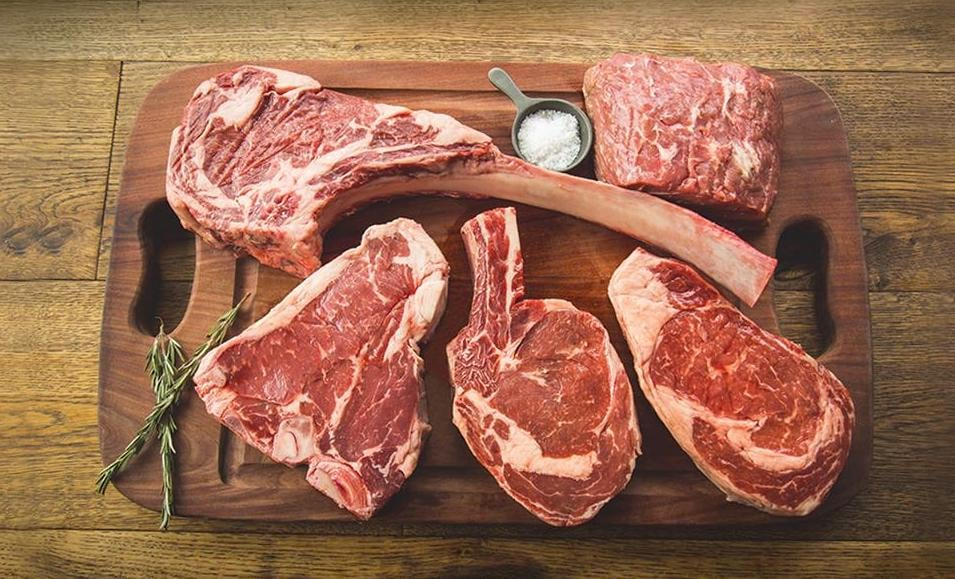

Hamburguesas
Bienvenidos a mi top 2 hamburguesas
MOSTACHO
La Mostacho, 27 de diciembre de 2023
Esta hamburguesa se llama "La Mostacho" para ir a probar esta hamburguesa fuimos con varios amigos y compañeros de clase como Antonio Mendez y Alvaro Truque esta hamburguesa estaba conformada por: pan brioche, cebolla caramelizada, salsa BBQ, carne de termera poco hecha, lechuga y tomate esta hambruguesa se lleva un 9/10 ya que estaba muy buena y jugosa pero no llega al 10 porque al ser demasiado jugosa se deshacia el pan y acabamos comiendo directamente la carne con la mano pero eso no quitó que volviesemos bastantes veces tambien tengo que decir que venia con una ración de patatas incluidas.
.jpeg)
FOODBAB
La Pulled pork, 29 de diciembre de 2023
Esta hamburguesa la comimos una noche de Navidad con mi primo Pablo Herrero estaba conformada por: pan brioche, queso chedar, carne pulled pork y salsa especial esta hamburguesa recibe una nota de 9/10 porque estaba muy buena pero tenia un precio mas elevado .
Sobre mi
Me presento, Hola soy Javier Herrero un fanatico de las hamburguesas y con mi amigo Guille Sanz hemos estado probando todo tipo de hamburguesas por la ciudad de Cartagena y yo estoy aqui para hablaros de las que a mi parecer son las mejores que hemos probado hasta el momento.
Otras cosas
-

Pizzas
Todos tipos -
 Postres
Postres
Todos los sabores -

Carnes
Mejores de España

Tags
Travel New York London IKEA NORWAY DIY Ideas Baby Family News Clothing Shopping Sports Games